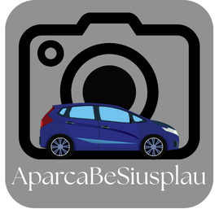
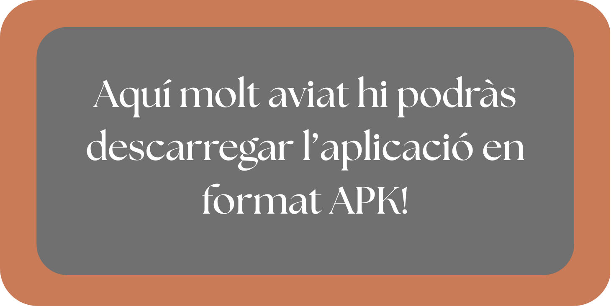

Millorem la convivència als carrers denunciant cotxes mal aparcats.

AparcaBéSiusplau és una plataforma d'ús lliure que permet als ciutadans col·laborar per millorar l'aparcament als carrers.
L'aplicació permet fer una foto d'un vehicle mal aparcat, introduir la seva matrícula manualment i enviar la incidència.
Un cop enviada, la plataforma genera automàticament una denúncia que s'envia mitjançant Telegram a les autoritats corresponents.
Fotografia el vehicle mal aparcat des de l'aplicació.
Escriu manualment la matrícula del vehicle.
La informació s'envia automàticament a través de Telegram.
La participació ciutadana ajuda a reduir infraccions.
L'aplicació només facilita l'enviament d'informació. Les autoritats decideixen si la denúncia és vàlida.
No, la plataforma és d'ús lliure.
El sistema està pensat per poder funcionar a qualsevol municipi.